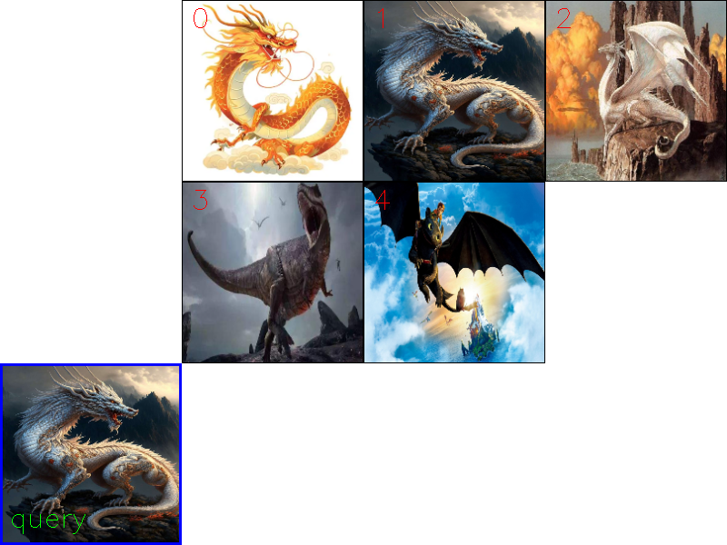

基本指南#
RAG: Retrieval-Augmented Generation检索增强生成
在LLM模型生成答案时候，先从知识库检索，再结合返回
所以完整步骤：
检索：从知识库
增强：将检索到的内容与原始问题合并，形成更强的Prompt
生成：交给LLM大模型，生成回答
from dotenv import load_dotenv
load_dotenv()
True
import os
os.getcwd()
数据准备#
数据加载#
加载出结构化数据。
结构化： 内容、类型、元信息、标签等
UnstructuredMarkdownLoader 默认会把所有格式清楚，保留纯文本。比如#， ## 这些都会丢掉
TextLoader 保留所有信息
from unstructured.partition.auto import partition
pdf_path = 'rag.pdf'
elements = partition(
filename=pdf_path,
content_type='application/pdf'
)
/home/dong/miniconda3/envs/data-analysis/lib/python3.12/site-packages/tqdm/auto.py:21: TqdmWarning: IProgress not found. Please update jupyter and ipywidgets. See https://ipywidgets.readthedocs.io/en/stable/user_install.html
from .autonotebook import tqdm as notebook_tqdm
[nltk_data] Error downloading 'punkt_tab' from
[nltk_data] <https://raw.githubusercontent.com/nltk/nltk_data/gh-
[nltk_data] pages/packages/tokenizers/punkt_tab.zip>: <urlopen
[nltk_data] error [SSL: UNEXPECTED_EOF_WHILE_READING] EOF occurred
[nltk_data] in violation of protocol (_ssl.c:1000)>
Could not get FontBBox from font descriptor because None cannot be parsed as 4 floats
Could not get FontBBox from font descriptor because None cannot be parsed as 4 floats
Could not get FontBBox from font descriptor because None cannot be parsed as 4 floats
Could not get FontBBox from font descriptor because None cannot be parsed as 4 floats
Could not get FontBBox from font descriptor because None cannot be parsed as 4 floats
Could not get FontBBox from font descriptor because None cannot be parsed as 4 floats
Could not get FontBBox from font descriptor because None cannot be parsed as 4 floats
Could not get FontBBox from font descriptor because None cannot be parsed as 4 floats
Could not get FontBBox from font descriptor because None cannot be parsed as 4 floats
Could not get FontBBox from font descriptor because None cannot be parsed as 4 floats
Could not get FontBBox from font descriptor because None cannot be parsed as 4 floats
Could not get FontBBox from font descriptor because None cannot be parsed as 4 floats
Could not get FontBBox from font descriptor because None cannot be parsed as 4 floats
Could not get FontBBox from font descriptor because None cannot be parsed as 4 floats
Could not get FontBBox from font descriptor because None cannot be parsed as 4 floats
Could not get FontBBox from font descriptor because None cannot be parsed as 4 floats
Could not get FontBBox from font descriptor because None cannot be parsed as 4 floats
Could not get FontBBox from font descriptor because None cannot be parsed as 4 floats
Could not get FontBBox from font descriptor because None cannot be parsed as 4 floats
Could not get FontBBox from font descriptor because None cannot be parsed as 4 floats
Could not get FontBBox from font descriptor because None cannot be parsed as 4 floats
Could not get FontBBox from font descriptor because None cannot be parsed as 4 floats
Could not get FontBBox from font descriptor because None cannot be parsed as 4 floats
Could not get FontBBox from font descriptor because None cannot be parsed as 4 floats
Could not get FontBBox from font descriptor because None cannot be parsed as 4 floats
Could not get FontBBox from font descriptor because None cannot be parsed as 4 floats
Could not get FontBBox from font descriptor because None cannot be parsed as 4 floats
Could not get FontBBox from font descriptor because None cannot be parsed as 4 floats
Could not get FontBBox from font descriptor because None cannot be parsed as 4 floats
Could not get FontBBox from font descriptor because None cannot be parsed as 4 floats
Could not get FontBBox from font descriptor because None cannot be parsed as 4 floats
Could not get FontBBox from font descriptor because None cannot be parsed as 4 floats
Could not get FontBBox from font descriptor because None cannot be parsed as 4 floats
Could not get FontBBox from font descriptor because None cannot be parsed as 4 floats
Could not get FontBBox from font descriptor because None cannot be parsed as 4 floats
Could not get FontBBox from font descriptor because None cannot be parsed as 4 floats
Could not get FontBBox from font descriptor because None cannot be parsed as 4 floats
Could not get FontBBox from font descriptor because None cannot be parsed as 4 floats
Could not get FontBBox from font descriptor because None cannot be parsed as 4 floats
Could not get FontBBox from font descriptor because None cannot be parsed as 4 floats
Could not get FontBBox from font descriptor because None cannot be parsed as 4 floats
Could not get FontBBox from font descriptor because None cannot be parsed as 4 floats
Could not get FontBBox from font descriptor because None cannot be parsed as 4 floats
Could not get FontBBox from font descriptor because None cannot be parsed as 4 floats
Could not get FontBBox from font descriptor because None cannot be parsed as 4 floats
Could not get FontBBox from font descriptor because None cannot be parsed as 4 floats
Could not get FontBBox from font descriptor because None cannot be parsed as 4 floats
Could not get FontBBox from font descriptor because None cannot be parsed as 4 floats
Could not get FontBBox from font descriptor because None cannot be parsed as 4 floats
Could not get FontBBox from font descriptor because None cannot be parsed as 4 floats
Could not get FontBBox from font descriptor because None cannot be parsed as 4 floats
Could not get FontBBox from font descriptor because None cannot be parsed as 4 floats
Could not get FontBBox from font descriptor because None cannot be parsed as 4 floats
Could not get FontBBox from font descriptor because None cannot be parsed as 4 floats
Could not get FontBBox from font descriptor because None cannot be parsed as 4 floats
Could not get FontBBox from font descriptor because None cannot be parsed as 4 floats
Could not get FontBBox from font descriptor because None cannot be parsed as 4 floats
Could not get FontBBox from font descriptor because None cannot be parsed as 4 floats
Could not get FontBBox from font descriptor because None cannot be parsed as 4 floats
Could not get FontBBox from font descriptor because None cannot be parsed as 4 floats
Could not get FontBBox from font descriptor because None cannot be parsed as 4 floats
Could not get FontBBox from font descriptor because None cannot be parsed as 4 floats
Could not get FontBBox from font descriptor because None cannot be parsed as 4 floats
Could not get FontBBox from font descriptor because None cannot be parsed as 4 floats
Could not get FontBBox from font descriptor because None cannot be parsed as 4 floats
Could not get FontBBox from font descriptor because None cannot be parsed as 4 floats
Could not get FontBBox from font descriptor because None cannot be parsed as 4 floats
Could not get FontBBox from font descriptor because None cannot be parsed as 4 floats
Could not get FontBBox from font descriptor because None cannot be parsed as 4 floats
Could not get FontBBox from font descriptor because None cannot be parsed as 4 floats
Could not get FontBBox from font descriptor because None cannot be parsed as 4 floats
Could not get FontBBox from font descriptor because None cannot be parsed as 4 floats
Could not get FontBBox from font descriptor because None cannot be parsed as 4 floats
Could not get FontBBox from font descriptor because None cannot be parsed as 4 floats
Could not get FontBBox from font descriptor because None cannot be parsed as 4 floats
Could not get FontBBox from font descriptor because None cannot be parsed as 4 floats
Could not get FontBBox from font descriptor because None cannot be parsed as 4 floats
Could not get FontBBox from font descriptor because None cannot be parsed as 4 floats
Could not get FontBBox from font descriptor because None cannot be parsed as 4 floats
Could not get FontBBox from font descriptor because None cannot be parsed as 4 floats
Could not get FontBBox from font descriptor because None cannot be parsed as 4 floats
Could not get FontBBox from font descriptor because None cannot be parsed as 4 floats
Could not get FontBBox from font descriptor because None cannot be parsed as 4 floats
Could not get FontBBox from font descriptor because None cannot be parsed as 4 floats
Could not get FontBBox from font descriptor because None cannot be parsed as 4 floats
Could not get FontBBox from font descriptor because None cannot be parsed as 4 floats
Could not get FontBBox from font descriptor because None cannot be parsed as 4 floats
Could not get FontBBox from font descriptor because None cannot be parsed as 4 floats
Could not get FontBBox from font descriptor because None cannot be parsed as 4 floats
Could not get FontBBox from font descriptor because None cannot be parsed as 4 floats
Could not get FontBBox from font descriptor because None cannot be parsed as 4 floats
Could not get FontBBox from font descriptor because None cannot be parsed as 4 floats
Could not get FontBBox from font descriptor because None cannot be parsed as 4 floats
Could not get FontBBox from font descriptor because None cannot be parsed as 4 floats
Could not get FontBBox from font descriptor because None cannot be parsed as 4 floats
Could not get FontBBox from font descriptor because None cannot be parsed as 4 floats
Could not get FontBBox from font descriptor because None cannot be parsed as 4 floats
Could not get FontBBox from font descriptor because None cannot be parsed as 4 floats
Could not get FontBBox from font descriptor because None cannot be parsed as 4 floats
Could not get FontBBox from font descriptor because None cannot be parsed as 4 floats
Could not get FontBBox from font descriptor because None cannot be parsed as 4 floats
Could not get FontBBox from font descriptor because None cannot be parsed as 4 floats
Could not get FontBBox from font descriptor because None cannot be parsed as 4 floats
Could not get FontBBox from font descriptor because None cannot be parsed as 4 floats
Could not get FontBBox from font descriptor because None cannot be parsed as 4 floats
Could not get FontBBox from font descriptor because None cannot be parsed as 4 floats
Could not get FontBBox from font descriptor because None cannot be parsed as 4 floats
Could not get FontBBox from font descriptor because None cannot be parsed as 4 floats
Could not get FontBBox from font descriptor because None cannot be parsed as 4 floats
Could not get FontBBox from font descriptor because None cannot be parsed as 4 floats
Could not get FontBBox from font descriptor because None cannot be parsed as 4 floats
Could not get FontBBox from font descriptor because None cannot be parsed as 4 floats
Could not get FontBBox from font descriptor because None cannot be parsed as 4 floats
Could not get FontBBox from font descriptor because None cannot be parsed as 4 floats
Could not get FontBBox from font descriptor because None cannot be parsed as 4 floats
Could not get FontBBox from font descriptor because None cannot be parsed as 4 floats
Could not get FontBBox from font descriptor because None cannot be parsed as 4 floats
Could not get FontBBox from font descriptor because None cannot be parsed as 4 floats
Could not get FontBBox from font descriptor because None cannot be parsed as 4 floats
Could not get FontBBox from font descriptor because None cannot be parsed as 4 floats
Could not get FontBBox from font descriptor because None cannot be parsed as 4 floats
Could not get FontBBox from font descriptor because None cannot be parsed as 4 floats
Could not get FontBBox from font descriptor because None cannot be parsed as 4 floats
Could not get FontBBox from font descriptor because None cannot be parsed as 4 floats
Could not get FontBBox from font descriptor because None cannot be parsed as 4 floats
Could not get FontBBox from font descriptor because None cannot be parsed as 4 floats
Could not get FontBBox from font descriptor because None cannot be parsed as 4 floats
Could not get FontBBox from font descriptor because None cannot be parsed as 4 floats
Could not get FontBBox from font descriptor because None cannot be parsed as 4 floats
Could not get FontBBox from font descriptor because None cannot be parsed as 4 floats
Could not get FontBBox from font descriptor because None cannot be parsed as 4 floats
Could not get FontBBox from font descriptor because None cannot be parsed as 4 floats
Could not get FontBBox from font descriptor because None cannot be parsed as 4 floats
Could not get FontBBox from font descriptor because None cannot be parsed as 4 floats
Could not get FontBBox from font descriptor because None cannot be parsed as 4 floats
Could not get FontBBox from font descriptor because None cannot be parsed as 4 floats
Could not get FontBBox from font descriptor because None cannot be parsed as 4 floats
Could not get FontBBox from font descriptor because None cannot be parsed as 4 floats
Could not get FontBBox from font descriptor because None cannot be parsed as 4 floats
Could not get FontBBox from font descriptor because None cannot be parsed as 4 floats
Could not get FontBBox from font descriptor because None cannot be parsed as 4 floats
Could not get FontBBox from font descriptor because None cannot be parsed as 4 floats
Could not get FontBBox from font descriptor because None cannot be parsed as 4 floats
Could not get FontBBox from font descriptor because None cannot be parsed as 4 floats
Could not get FontBBox from font descriptor because None cannot be parsed as 4 floats
Could not get FontBBox from font descriptor because None cannot be parsed as 4 floats
Warning: No languages specified, defaulting to English.
---------------------------------------------------------------------------
FileNotFoundError Traceback (most recent call last)
File ~/miniconda3/envs/data-analysis/lib/python3.12/site-packages/pdf2image/pdf2image.py:581, in pdfinfo_from_path(pdf_path, userpw, ownerpw, poppler_path, rawdates, timeout, first_page, last_page)
580 env["LD_LIBRARY_PATH"] = poppler_path + ":" + env.get("LD_LIBRARY_PATH", "")
--> 581 proc = Popen(command, env=env, stdout=PIPE, stderr=PIPE)
583 try:
File ~/miniconda3/envs/data-analysis/lib/python3.12/subprocess.py:1026, in Popen.__init__(self, args, bufsize, executable, stdin, stdout, stderr, preexec_fn, close_fds, shell, cwd, env, universal_newlines, startupinfo, creationflags, restore_signals, start_new_session, pass_fds, user, group, extra_groups, encoding, errors, text, umask, pipesize, process_group)
1023 self.stderr = io.TextIOWrapper(self.stderr,
1024 encoding=encoding, errors=errors)
-> 1026 self._execute_child(args, executable, preexec_fn, close_fds,
1027 pass_fds, cwd, env,
1028 startupinfo, creationflags, shell,
1029 p2cread, p2cwrite,
1030 c2pread, c2pwrite,
1031 errread, errwrite,
1032 restore_signals,
1033 gid, gids, uid, umask,
1034 start_new_session, process_group)
1035 except:
1036 # Cleanup if the child failed starting.
File ~/miniconda3/envs/data-analysis/lib/python3.12/subprocess.py:1955, in Popen._execute_child(self, args, executable, preexec_fn, close_fds, pass_fds, cwd, env, startupinfo, creationflags, shell, p2cread, p2cwrite, c2pread, c2pwrite, errread, errwrite, restore_signals, gid, gids, uid, umask, start_new_session, process_group)
1954 if err_filename is not None:
-> 1955 raise child_exception_type(errno_num, err_msg, err_filename)
1956 else:
FileNotFoundError: [Errno 2] No such file or directory: 'pdfinfo'
During handling of the above exception, another exception occurred:
PDFInfoNotInstalledError Traceback (most recent call last)
Cell In[1], line 5
1 from unstructured.partition.auto import partition
2
3 pdf_path = 'rag.pdf'
4
----> 5 elements = partition(
6 filename=pdf_path,
7 content_type='application/pdf'
8 )
File ~/miniconda3/envs/data-analysis/lib/python3.12/site-packages/unstructured/partition/auto.py:212, in partition(filename, file, encoding, content_type, url, headers, ssl_verify, request_timeout, strategy, skip_infer_table_types, ocr_languages, languages, detect_language_per_element, pdf_infer_table_structure, extract_images_in_pdf, extract_image_block_types, extract_image_block_output_dir, extract_image_block_to_payload, data_source_metadata, metadata_filename, hi_res_model_name, model_name, starting_page_number, **kwargs)
210 if file_type == FileType.PDF:
211 partition_pdf = partitioner_loader.get(file_type)
--> 212 elements = partition_pdf(
213 filename=filename,
214 file=file,
215 url=None,
216 infer_table_structure=infer_table_structure,
217 strategy=strategy,
218 languages=languages,
219 detect_language_per_element=detect_language_per_element,
220 hi_res_model_name=hi_res_model_name or model_name,
221 extract_images_in_pdf=extract_images_in_pdf,
222 extract_image_block_types=extract_image_block_types,
223 extract_image_block_output_dir=extract_image_block_output_dir,
224 extract_image_block_to_payload=extract_image_block_to_payload,
225 starting_page_number=starting_page_number,
226 **kwargs,
227 )
228 return augment_metadata(elements)
230 if file_type.partitioner_shortname and file_type.partitioner_shortname == "image":
File ~/miniconda3/envs/data-analysis/lib/python3.12/site-packages/unstructured/partition/common/metadata.py:162, in apply_metadata.<locals>.decorator.<locals>.wrapper(*args, **kwargs)
160 @functools.wraps(func)
161 def wrapper(*args: _P.args, **kwargs: _P.kwargs) -> list[Element]:
--> 162 elements = func(*args, **kwargs)
163 call_args = get_call_args_applying_defaults(func, *args, **kwargs)
165 # ------------------------------------------------------------------------------------
166 # unique-ify elements
167 # ------------------------------------------------------------------------------------
(...) 172 # instance).
173 # ------------------------------------------------------------------------------------
File ~/miniconda3/envs/data-analysis/lib/python3.12/site-packages/unstructured/chunking/dispatch.py:74, in add_chunking_strategy.<locals>.wrapper(*args, **kwargs)
71 """The decorated function is replaced with this one."""
73 # -- call the partitioning function to get the elements --
---> 74 elements = func(*args, **kwargs)
76 # -- look for a chunking-strategy argument --
77 call_args = get_call_args_applying_defaults(func, *args, **kwargs)
File ~/miniconda3/envs/data-analysis/lib/python3.12/site-packages/unstructured/partition/pdf.py:225, in partition_pdf(filename, file, include_page_breaks, strategy, infer_table_structure, ocr_languages, languages, detect_language_per_element, metadata_last_modified, chunking_strategy, hi_res_model_name, extract_images_in_pdf, extract_image_block_types, extract_image_block_output_dir, extract_image_block_to_payload, starting_page_number, extract_forms, form_extraction_skip_tables, password, pdfminer_line_margin, pdfminer_char_margin, pdfminer_line_overlap, pdfminer_word_margin, **kwargs)
222 exactly_one(filename=filename, file=file)
224 languages = check_language_args(languages or [], ocr_languages)
--> 225 return partition_pdf_or_image(
226 filename=filename,
227 file=file,
228 include_page_breaks=include_page_breaks,
229 strategy=strategy,
230 infer_table_structure=infer_table_structure,
231 languages=languages,
232 detect_language_per_element=detect_language_per_element,
233 metadata_last_modified=metadata_last_modified,
234 hi_res_model_name=hi_res_model_name,
235 extract_images_in_pdf=extract_images_in_pdf,
236 extract_image_block_types=extract_image_block_types,
237 extract_image_block_output_dir=extract_image_block_output_dir,
238 extract_image_block_to_payload=extract_image_block_to_payload,
239 starting_page_number=starting_page_number,
240 extract_forms=extract_forms,
241 form_extraction_skip_tables=form_extraction_skip_tables,
242 password=password,
243 pdfminer_line_margin=pdfminer_line_margin,
244 pdfminer_char_margin=pdfminer_char_margin,
245 pdfminer_line_overlap=pdfminer_line_overlap,
246 pdfminer_word_margin=pdfminer_word_margin,
247 **kwargs,
248 )
File ~/miniconda3/envs/data-analysis/lib/python3.12/site-packages/unstructured/partition/pdf.py:381, in partition_pdf_or_image(filename, file, is_image, include_page_breaks, strategy, infer_table_structure, languages, detect_language_per_element, metadata_last_modified, hi_res_model_name, extract_images_in_pdf, extract_image_block_types, extract_image_block_output_dir, extract_image_block_to_payload, starting_page_number, extract_forms, form_extraction_skip_tables, password, pdfminer_line_margin, pdfminer_char_margin, pdfminer_line_overlap, pdfminer_word_margin, ocr_agent, table_ocr_agent, **kwargs)
378 elif strategy == PartitionStrategy.OCR_ONLY:
379 # NOTE(robinson): Catches file conversion warnings when running with PDFs
380 with warnings.catch_warnings():
--> 381 elements = _partition_pdf_or_image_with_ocr(
382 filename=filename,
383 file=file,
384 include_page_breaks=include_page_breaks,
385 languages=languages,
386 ocr_languages=ocr_languages,
387 is_image=is_image,
388 metadata_last_modified=metadata_last_modified or last_modified,
389 starting_page_number=starting_page_number,
390 password=password,
391 **kwargs,
392 )
393 out_elements = _process_uncategorized_text_elements(elements)
395 return out_elements
File ~/miniconda3/envs/data-analysis/lib/python3.12/site-packages/unstructured/partition/pdf.py:933, in _partition_pdf_or_image_with_ocr(filename, file, include_page_breaks, languages, ocr_languages, is_image, metadata_last_modified, starting_page_number, password, **kwargs)
931 elements.extend(page_elements)
932 else:
--> 933 for page_number, image in enumerate(
934 convert_pdf_to_images(filename, file, password=password), start=starting_page_number
935 ):
936 page_elements = _partition_pdf_or_image_with_ocr_from_image(
937 image=image,
938 languages=languages,
(...) 943 **kwargs,
944 )
945 elements.extend(page_elements)
File ~/miniconda3/envs/data-analysis/lib/python3.12/site-packages/unstructured/partition/pdf_image/pdf_image_utils.py:412, in convert_pdf_to_images(filename, file, chunk_size, password)
410 else:
411 f_bytes = None
--> 412 info = pdf2image.pdfinfo_from_path(filename, userpw=password)
414 total_pages = info["Pages"]
415 for start_page in range(1, total_pages + 1, chunk_size):
File ~/miniconda3/envs/data-analysis/lib/python3.12/site-packages/pdf2image/pdf2image.py:607, in pdfinfo_from_path(pdf_path, userpw, ownerpw, poppler_path, rawdates, timeout, first_page, last_page)
604 return d
606 except OSError:
--> 607 raise PDFInfoNotInstalledError(
608 "Unable to get page count. Is poppler installed and in PATH?"
609 )
610 except ValueError:
611 raise PDFPageCountError(
612 f"Unable to get page count.\n{err.decode('utf8', 'ignore')}"
613 )
PDFInfoNotInstalledError: Unable to get page count. Is poppler installed and in PATH?
elements是解析出文本元素列表，每个元素有类型
elements[0]
len(elements)
str(elements[0])
print(f'解析出 {len(elements)} 个元素' )
print(f'一共 { sum(len(str(e)) for e in elements)}字符')
elements[0].category
for i,e in enumerate(elements):
print(f'{i} {e.category} {e}')
文本分块#
把上面的文档元素继续分块，是向量/模型处理的基本单位
LLM嵌入模型，一般都是长度限制的。所以我们要分块。 这类模型基于transformer架构：
分词：把文本切成一个个token
向量化：把token转成向量
池化降维：把向量池化成一个固定长度的向量。 这代表了这个文本的语义信息。
因此，我们应该尽可能让文本块尽可能精准表达，而非是一味追求长度添加噪声。
LangChain 给了几种分块策略
固定长度
基于段落分界感知
并非严格的固定，会尽量保证语义连续，比如段落
避免块之间语义分割，重叠 以保证上下文连续性
对于日志数据比较好
from langchain.text_splitter import CharacterTextSplitter
from langchain_community.document_loaders import TextLoader
loader = TextLoader(file_path='蜂医.txt')
docs = loader.load()
docs
text_splitter = CharacterTextSplitter(
chunk_size = 200,
chunk_overlap=10
)
chunks = text_splitter.split_documents(docs)
chunks
递归分块
按照分隔符分块。 而非段落
先按段落分块，如果块太大，再按句子分块，如果还太大，再按词分块
对编程语言有着明确分隔符，效果较好。内置支持.
from langchain.text_splitter import RecursiveCharacterTextSplitter
loader = TextLoader(file_path='蜂医.txt')
docs = loader.load()
text_splitter = RecursiveCharacterTextSplitter(
separators = ["\n\n", "\n", "。", "，", " ", ""], # 分隔符优先级
chunk_size = 200,
chunk_overlap=10
)
chunks = text_splitter.split_documents(docs)
chunks
语义分块
智能，根据文本语义主题显著变化的地方分块。会调用模型判断边界
import os
from langchain_experimental.text_splitter import SemanticChunker
from langchain_community.embeddings import HuggingFaceEmbeddings
embeddings = HuggingFaceEmbeddings(
model_name="BAAI/bge-small-zh-v1.5",
model_kwargs={'device': 'cpu'},
encode_kwargs={'normalize_embeddings': True}
)
text_splitter = SemanticChunker(
embeddings,
)
chunks = text_splitter.split_documents(docs)
chunks
基于文档结构分块
html,md,latex有着明确的结构标签。
其他分块策略
Unstructured也提供了分块策略：建立在解析元素上，都有元素类型。
ChunkViz可视化分块
索引构建#
向量嵌入#
就是将文本、图像等放在全局空间上，用一个向量表示
表示为向量后，我们可以度量
RAG检索以这个为基础：
离线索引：知识文档分块后转为向量，存入向量数据库
在线查询：输入问题转为向量
相似度计算
召回上下文：选取相似度最高的几个文本块，作为上下文，输入给LLM
现在的向量模型通常是BERT结构(transformer)：
MTEB (Massive Text Embedding Benchmark) 排行榜有各种向量模型
多模态嵌入#
文本、图像、表格等都可以转为向量。 共享一个空间。
Hugging Face 是 AI 界的 GitHub。 有各种模型等.其中transformers 库提供各种预训练模型
CLIP模型；bge-visualized-m3模型
(BGE_VL_BASE)[https://huggingface.co/BAAI/BGE-VL-base]
以BGE_VL_BASE为例 ，Visual-Language (图文)
AutoModel 偏原生，提供了更多的底层接口，适合需要更细粒度控制的用户。
import os
os.getcwd()
'/home/dong/data-analysis/myrag'
import torch
from transformers import AutoModel
MODEL_NAME = "BAAI/BGE-VL-base" # or "BAAI/BGE-VL-large"
model = AutoModel.from_pretrained(MODEL_NAME, trust_remote_code=True) # You must set trust_remote_code=True
model.set_processor(MODEL_NAME)
model.eval()
/home/dong/miniconda3/envs/data-analysis/lib/python3.12/site-packages/tqdm/auto.py:21: TqdmWarning: IProgress not found. Please update jupyter and ipywidgets. See https://ipywidgets.readthedocs.io/en/stable/user_install.html
from .autonotebook import tqdm as notebook_tqdm
Using a slow image processor as `use_fast` is unset and a slow processor was saved with this model. `use_fast=True` will be the default behavior in v4.52, even if the model was saved with a slow processor. This will result in minor differences in outputs. You'll still be able to use a slow processor with `use_fast=False`.
CLIPModel(
(text_model): CLIPTextTransformer(
(embeddings): CLIPTextEmbeddings(
(token_embedding): Embedding(49408, 512)
(position_embedding): Embedding(77, 512)
)
(encoder): CLIPEncoder(
(layers): ModuleList(
(0-11): 12 x CLIPEncoderLayer(
(self_attn): CLIPSdpaAttention(
(k_proj): Linear(in_features=512, out_features=512, bias=True)
(v_proj): Linear(in_features=512, out_features=512, bias=True)
(q_proj): Linear(in_features=512, out_features=512, bias=True)
(out_proj): Linear(in_features=512, out_features=512, bias=True)
)
(layer_norm1): LayerNorm((512,), eps=1e-05, elementwise_affine=True)
(mlp): CLIPMLP(
(activation_fn): QuickGELUActivation()
(fc1): Linear(in_features=512, out_features=2048, bias=True)
(fc2): Linear(in_features=2048, out_features=512, bias=True)
)
(layer_norm2): LayerNorm((512,), eps=1e-05, elementwise_affine=True)
)
)
)
(final_layer_norm): LayerNorm((512,), eps=1e-05, elementwise_affine=True)
)
(vision_model): CLIPVisionTransformer(
(embeddings): CLIPVisionEmbeddings(
(patch_embedding): Conv2d(3, 768, kernel_size=(16, 16), stride=(16, 16), bias=False)
(position_embedding): Embedding(197, 768)
)
(pre_layrnorm): LayerNorm((768,), eps=1e-05, elementwise_affine=True)
(encoder): CLIPEncoder(
(layers): ModuleList(
(0-11): 12 x CLIPEncoderLayer(
(self_attn): CLIPSdpaAttention(
(k_proj): Linear(in_features=768, out_features=768, bias=True)
(v_proj): Linear(in_features=768, out_features=768, bias=True)
(q_proj): Linear(in_features=768, out_features=768, bias=True)
(out_proj): Linear(in_features=768, out_features=768, bias=True)
)
(layer_norm1): LayerNorm((768,), eps=1e-05, elementwise_affine=True)
(mlp): CLIPMLP(
(activation_fn): QuickGELUActivation()
(fc1): Linear(in_features=768, out_features=3072, bias=True)
(fc2): Linear(in_features=3072, out_features=768, bias=True)
)
(layer_norm2): LayerNorm((768,), eps=1e-05, elementwise_affine=True)
)
)
)
(post_layernorm): LayerNorm((768,), eps=1e-05, elementwise_affine=True)
)
(visual_projection): Linear(in_features=768, out_features=512, bias=False)
(text_projection): Linear(in_features=512, out_features=512, bias=False)
)
with torch.no_grad():
query = model.encode(
images = "data/cir_query.png",
text = "Make the background dark, as if the camera has taken the photo at night"
)
print(f'query {query.shape}')
candidates = model.encode(
images = ["data/cir_candi_1.png", "data/cir_candi_2.png"]
)
print(f'candidate {candidates.shape}')
scores = query @ candidates.T
print(scores)
query torch.Size([1, 512])
candidate torch.Size([2, 512])
tensor([[0.1971, 0.1242]])
query.squeeze().shape
torch.Size([512])
向量数据库#
存储向量，相似度查询
FAISS 或者ChromaDB ：本地小型
from langchain_community.vectorstores import FAISS
from langchain_community.embeddings import HuggingFaceEmbeddings
from langchain_core.documents import Document
texts = [
"张三是法外狂徒",
"FAISS是一个用于高效相似性搜索和密集向量聚类的库。",
"LangChain是一个用于开发由语言模型驱动的应用程序的框架。"
]
docs = [Document(page_content =t ) for t in texts]
docs
embeddings = HuggingFaceEmbeddings(model_name="BAAI/bge-small-zh-v1.5")
创建
vectorstore = FAISS.from_documents(docs, embeddings)
保存
local_faiss_path = "./faiss_index_store"
vectorstore.save_local(local_faiss_path)
print(f"FAISS index has been saved to {local_faiss_path}")
加载
loaded_vectorstore = FAISS.load_local(
local_faiss_path,
embeddings,
allow_dangerous_deserialization=True
)
query = "张三是谁"
results = loaded_vectorstore.similarity_search(query, k=1)
print(f"查询: '{query}'")
print("相似度最高的文档:")
for doc in results:
print(f"- {doc.page_content}")
---------------------------------------------------------------------------
NameError Traceback (most recent call last)
Cell In[4], line 2
1 query = "张三是谁"
----> 2 results = loaded_vectorstore.similarity_search(query, k=1)
3 print(f"查询: '{query}'")
4 print("相似度最高的文档:")
5 for doc in results:
NameError: name 'loaded_vectorstore' is not defined
Milvus实践#
这里使用milvus_lite轻量版说明
import pymilvus
print(pymilvus.__version__)
2.6.12
!()[https://datawhalechina.github.io/all-in-rag/chapter3/images/3_4_1.webp]
import os
from pymilvus import MilvusClient,FieldSchema, CollectionSchema,DataType
print(os.getcwd())
/home/dong/data-analysis/myrag
通用的encoder为多模态，使用之前的BAAI/BGE-VL-base 编码
import torch
from transformers import AutoModel
MODEL_NAME = "BAAI/BGE-VL-base" # or "BAAI/BGE-VL-large"
model = AutoModel.from_pretrained(MODEL_NAME, trust_remote_code=True) # You must set trust_remote_code=True
model.set_processor(MODEL_NAME)
encoder = model.eval()
COLLECTION_NAME = 'multimodal_demo'
MILVUS_URI = 'milvus_demo.db'
client = MilvusClient(MILVUS_URI)
if client.has_collection(COLLECTION_NAME):
client.drop_collection(COLLECTION_NAME)
/home/dong/miniconda3/envs/data-analysis/lib/python3.12/site-packages/milvus_lite/__init__.py:15: UserWarning: pkg_resources is deprecated as an API. See https://setuptools.pypa.io/en/latest/pkg_resources.html. The pkg_resources package is slated for removal as early as 2025-11-30. Refrain from using this package or pin to Setuptools<81.
from pkg_resources import DistributionNotFound, get_distribution
DATA_DIR = 'data'
import glob
imgs = glob.glob(os.path.join(DATA_DIR, 'dragon', '*.png'))
imgs
['data/dragon/dragon05.png',
'data/dragon/dragon04.png',
'data/dragon/dragon06.png',
'data/dragon/dragon02.png',
'data/dragon/query.png',
'data/dragon/dragon03.png',
'data/dragon/other01.png']
encoder.encode(images=imgs[0]).shape
torch.Size([1, 512])
dim = encoder.encode(images=imgs[0]).shape[1]
dim
512
fields = [
FieldSchema(name='id', dtype=DataType.INT64, is_primary=True,auto_id = True),
FieldSchema(name='vector', dtype=DataType.FLOAT_VECTOR, dim = dim),
FieldSchema(name="image_path", dtype=DataType.VARCHAR, max_length=512),
]
我们创建了3个字段，存储每个向量
schema = CollectionSchema(fields, description='多模态图文检索')
schema
{'auto_id': True, 'description': '多模态图文检索', 'fields': [{'name': 'id', 'description': '', 'type': <DataType.INT64: 5>, 'is_primary': True, 'auto_id': True}, {'name': 'vector', 'description': '', 'type': <DataType.FLOAT_VECTOR: 101>, 'params': {'dim': 512}}, {'name': 'image_path', 'description': '', 'type': <DataType.VARCHAR: 21>, 'params': {'max_length': 512}}], 'enable_dynamic_field': False, 'enable_namespace': False}
根据schema结构创建了一个集合（表）
client.create_collection(collection_name=COLLECTION_NAME, schema=schema)
print(client.describe_collection(COLLECTION_NAME))
{'collection_name': 'multimodal_demo', 'auto_id': True, 'num_shards': 0, 'description': '多模态图文检索', 'fields': [{'field_id': 100, 'name': 'id', 'description': '', 'type': <DataType.INT64: 5>, 'params': {}, 'auto_id': True, 'is_primary': True}, {'field_id': 101, 'name': 'vector', 'description': '', 'type': <DataType.FLOAT_VECTOR: 101>, 'params': {'dim': 512}}, {'field_id': 102, 'name': 'image_path', 'description': '', 'type': <DataType.VARCHAR: 21>, 'params': {'max_length': 512}}], 'functions': [], 'aliases': [], 'collection_id': 0, 'consistency_level': 0, 'properties': {}, 'num_partitions': 0, 'enable_dynamic_field': False, 'enable_namespace': False}
现在可以插入向量数据了
from tqdm import tqdm
data_insert= []
for img_path in tqdm(imgs, desc='生成向量'):
with torch.no_grad():
vector = encoder.encode(images=img_path).numpy().squeeze().tolist() # 一维
data_insert.append({
'vector': vector,
'image_path':img_path
})
if data_insert:
client.insert(collection_name=COLLECTION_NAME,
data= data_insert
)
生成向量: 0%| | 0/7 [00:00<?, ?it/s]
生成向量: 100%|██████████| 7/7 [00:02<00:00, 2.81it/s]
为了快速检索，我们为vector字段其添加索引.
index_params = client.prepare_index_params()
index_params.add_index(
field_name='vector',
index_type='FLAT', # 索引类型
metric_type="COSINE", # 度量比较方式
)
client.create_index(collection_name=COLLECTION_NAME, index_params=index_params)
client.describe_index(collection_name=COLLECTION_NAME, index_name='vector')
{'index_type': 'FLAT',
'metric_type': 'COSINE',
'dim': '512',
'field_name': 'vector',
'index_name': 'vector',
'total_rows': 0,
'indexed_rows': 0,
'pending_index_rows': 0,
'state': 'Finished'}
client.load_collection(collection_name=COLLECTION_NAME)
表加载到内存
查询
query_image_path = os.path.join(DATA_DIR, "dragon", "query.png")
query_text = "一条龙"
with torch.no_grad(): # 转换为普通向量，不带其他信息
query_vector = encoder.encode(
images = query_image_path,
text = query_text
)
query_vector = query_vector.numpy().squeeze().tolist()
query_vector
[0.01725715957581997,
0.023119034245610237,
-0.007155007682740688,
-0.004334800411015749,
0.015785498544573784,
-0.014036229811608791,
0.022550037130713463,
0.026307106018066406,
-0.016902843490242958,
0.012545951642096043,
-0.024153610691428185,
-0.0200381800532341,
-0.03180725499987602,
0.02135445922613144,
0.00471658818423748,
-0.0110956821590662,
-0.01773425191640854,
-0.00548075744882226,
0.024504518136382103,
0.023137202486395836,
0.00022098403132986277,
-0.04467716068029404,
0.002974338596686721,
0.058180760592222214,
0.018238915130496025,
0.011031615547835827,
-0.0005261931801214814,
-0.0019379250006750226,
0.008150340989232063,
-0.05595412850379944,
0.03432084992527962,
-0.003189715091139078,
0.0033318372443318367,
-0.0007683312869630754,
0.10343178361654282,
0.02090439945459366,
-0.006991119589656591,
-0.04578687995672226,
0.046655502170324326,
-0.013699943199753761,
0.06486772000789642,
-0.0036791316233575344,
-0.028273137286305428,
-0.0447225384414196,
0.009210770949721336,
0.004027809016406536,
-0.03813202306628227,
0.002325046341866255,
0.017488213256001472,
-0.03747802600264549,
0.04366128519177437,
0.005084858275949955,
-0.011327778920531273,
-0.014173888601362705,
-0.04935619235038757,
0.04337850585579872,
-0.013376526534557343,
0.004231274127960205,
-0.002888168441131711,
-0.051038939505815506,
0.021796314045786858,
-0.004969658795744181,
-0.031442079693078995,
0.033606670796871185,
-0.03413982316851616,
0.027943389490246773,
0.019539862871170044,
0.018885647878050804,
0.04246491193771362,
0.010491108521819115,
-0.04992760345339775,
0.025460051372647285,
-0.01857236959040165,
-0.01041880901902914,
0.031723037362098694,
-0.010562309995293617,
-0.04431109130382538,
0.021161044016480446,
0.0108086708933115,
0.03311062231659889,
-0.01771450974047184,
0.033004336059093475,
-0.03564220294356346,
0.045738305896520615,
0.013920591212809086,
0.00031263724667951465,
-0.021322963759303093,
0.01258454006165266,
-0.0548817403614521,
-0.004317665938287973,
0.004049257375299931,
0.0012724632397294044,
-0.02544398605823517,
0.04896631836891174,
-0.08025453239679337,
0.018300149589776993,
0.006432768888771534,
0.008689074777066708,
0.004310288932174444,
0.008021419867873192,
-0.03148946538567543,
0.04547267407178879,
0.0003658626810647547,
-0.022923607379198074,
0.0069991713389754295,
0.0006618904299102724,
0.019816929474473,
-0.010765034705400467,
0.013970660045742989,
-0.042142610996961594,
0.004990597255527973,
-0.03799447417259216,
0.0046999286860227585,
-0.02766527608036995,
-0.0006841809954494238,
-0.005994035396724939,
-0.011219900101423264,
0.05452277883887291,
-0.024770349264144897,
-0.009780026972293854,
-0.024163292720913887,
0.005441696848720312,
-0.048007506877183914,
0.005459580570459366,
0.07246027141809464,
-0.03373067080974579,
-0.036573782563209534,
0.0537763386964798,
-0.00429878244176507,
-0.02147180587053299,
0.04679952561855316,
-0.01703794300556183,
-0.06260868161916733,
0.009125900454819202,
-0.03679186850786209,
0.011955498717725277,
0.027012402191758156,
-0.014049521647393703,
-0.0008340266649611294,
0.01782580465078354,
-0.05428105965256691,
-0.025508664548397064,
0.04130754992365837,
0.02820466086268425,
0.008078858256340027,
-0.029600152745842934,
-0.054563988000154495,
0.035902250558137894,
0.030584966763854027,
-0.0033976086415350437,
-0.041154246777296066,
0.022617505863308907,
0.030867718160152435,
-0.04472436010837555,
0.00625521270558238,
-0.043415315449237823,
0.002846173010766506,
-0.01038645301014185,
-0.013968435116112232,
-0.010559918358922005,
0.0071199978701770306,
0.026449570432305336,
0.007639661431312561,
0.0028717583045363426,
0.01703326776623726,
0.006243608426302671,
-0.006366154178977013,
0.22403040528297424,
0.027406448498368263,
-0.00204668752849102,
0.03570186719298363,
0.05619793385267258,
-0.002817937871441245,
0.006863473914563656,
0.01259682048112154,
0.00686053279787302,
-0.008455134928226471,
0.0672764703631401,
0.04049386456608772,
0.06508046388626099,
0.04208836704492569,
0.029832040891051292,
0.022859347984194756,
-0.011444597505033016,
0.00394331943243742,
0.01112842746078968,
0.010723261162638664,
0.0021369338501244783,
0.006139756180346012,
-0.023343276232481003,
0.01291088666766882,
-0.04048783332109451,
-0.026338109746575356,
-0.016520505771040916,
0.033475954085588455,
0.022399822250008583,
0.020734934136271477,
0.04111257568001747,
-0.053778115659952164,
0.012845882214605808,
0.022561341524124146,
-0.0045973495580255985,
-0.04705377668142319,
-0.005347684491425753,
-0.07316438853740692,
0.0002825833798851818,
-0.01887393742799759,
0.019026033580303192,
0.044293925166130066,
-0.014177486300468445,
0.05007151514291763,
-0.05067833513021469,
0.03597937524318695,
0.0037347297184169292,
-0.04687092825770378,
0.031064605340361595,
-0.009162124246358871,
-0.016605019569396973,
0.032052308320999146,
0.0033273862209171057,
0.01931248977780342,
0.028155291453003883,
0.03150732442736626,
-0.0486990325152874,
-0.029130881652235985,
-0.025340009480714798,
-0.030816761776804924,
-0.02966480515897274,
0.011498196981847286,
0.031741153448820114,
0.09705047309398651,
0.009888658300042152,
0.02265280671417713,
0.00687706982716918,
-0.03828027844429016,
-0.026689285412430763,
0.05012989789247513,
-0.0219754446297884,
0.025467129424214363,
0.002687957137823105,
-0.03776376694440842,
-0.008667970076203346,
-0.00995264295488596,
0.004915305413305759,
-0.009121410548686981,
0.0181232001632452,
-0.032011888921260834,
-0.023395666852593422,
0.039300721138715744,
0.030511904507875443,
-0.018207712098956108,
0.008274629712104797,
0.012220816686749458,
0.007080595940351486,
0.08421724289655685,
-0.013971284963190556,
-0.008213232271373272,
0.00514691649004817,
-0.002289024880155921,
0.006537305191159248,
0.05495225638151169,
-0.03783566132187843,
-0.020319664850831032,
0.019139721989631653,
0.012996502220630646,
0.0026451367884874344,
-0.0014669896336272359,
-0.01861354149878025,
0.03912750631570816,
0.014590170234441757,
0.01783131994307041,
-0.004752890206873417,
0.03392283618450165,
-0.035766128450632095,
-0.024237629026174545,
0.043810293078422546,
0.021576110273599625,
-0.0022583859972655773,
0.0278906412422657,
0.003858233569189906,
-0.04671855270862579,
-0.0708969384431839,
-0.012554203160107136,
-0.007484145928174257,
-0.03825461119413376,
-0.002002252032980323,
-0.041197702288627625,
0.014423898421227932,
-0.013354676775634289,
-0.017300084233283997,
-0.006781572476029396,
-0.005748219322413206,
-0.013947308994829655,
0.0009931783424690366,
0.030914440751075745,
0.005183565896004438,
0.05131112411618233,
-0.0006917710998095572,
0.028319191187620163,
-0.03036385588347912,
0.007320533972233534,
0.014880714938044548,
-0.01966572366654873,
0.021653424948453903,
0.02764413319528103,
0.04182665795087814,
-0.002689257962629199,
0.035047151148319244,
-0.026337910443544388,
-0.06111305579543114,
0.02033030055463314,
-0.021004540845751762,
0.015399720519781113,
0.02863197959959507,
0.06019170954823494,
0.007465186528861523,
-0.035555534064769745,
0.03229910507798195,
0.018092306330800056,
0.01960783265531063,
-0.014245772734284401,
-0.03750509396195412,
0.006288720294833183,
-0.010495029389858246,
0.018970388919115067,
0.01157231256365776,
-0.024289270862936974,
-0.01484653539955616,
-0.03237852081656456,
0.046513549983501434,
-0.06028531864285469,
0.022856123745441437,
0.034513022750616074,
0.01745453104376793,
-0.012069456279277802,
-0.025968970730900764,
-0.007802546489983797,
-0.027402929961681366,
0.010357123799622059,
0.023047707974910736,
-0.0014871867606416345,
0.005717262160032988,
-0.015091167762875557,
0.013935943134129047,
0.045550256967544556,
0.012411003932356834,
-0.01023133285343647,
0.056607287377119064,
-0.010958494618535042,
-0.007793712895363569,
0.040247995406389236,
0.021551555022597313,
-0.008383175358176231,
0.01676015928387642,
-0.022821376100182533,
0.030545704066753387,
-0.015292417258024216,
-0.041518647223711014,
-0.057613905519247055,
-0.037729304283857346,
0.019801117479801178,
0.01977848820388317,
0.7116332054138184,
0.019931050017476082,
0.006174481473863125,
-0.0024524109903723,
0.010767723433673382,
0.02489042468369007,
-0.014652451500296593,
0.006647939793765545,
-0.023615188896656036,
-0.005495857913047075,
0.009635820053517818,
0.03313148766756058,
-0.04859081655740738,
0.03765284642577171,
-0.10855471342802048,
0.017664724960923195,
-0.03433528542518616,
-0.019702576100826263,
-0.0013316376134753227,
0.026380334049463272,
0.028506018221378326,
-0.029880065470933914,
-0.014280845411121845,
-0.01563543826341629,
0.0405624620616436,
0.036177512258291245,
-0.013812786899507046,
-0.0007198772509582341,
0.02745210938155651,
-0.03151382505893707,
0.020118234679102898,
-0.013222487643361092,
-0.032221850007772446,
0.010561886243522167,
-0.026280103251338005,
-0.006669860333204269,
0.0041961707174777985,
0.00902063399553299,
-0.038854002952575684,
-0.04582945257425308,
0.03294404596090317,
-0.011831016279757023,
-6.13470037933439e-05,
0.008741560392081738,
-0.03348862752318382,
-0.05250178277492523,
0.012290770187973976,
0.017400220036506653,
-0.035075634717941284,
0.00395628809928894,
0.0006650181603617966,
0.012011030688881874,
-0.022356495261192322,
0.015387295745313168,
-0.05573754757642746,
-0.0617278516292572,
0.02828994207084179,
0.04676026478409767,
0.024214405566453934,
0.016368694603443146,
-0.005661579314619303,
0.0139152305200696,
0.01719396747648716,
-0.009401703253388405,
-0.02591640129685402,
-0.046764593571424484,
0.012781310826539993,
-0.0463295541703701,
0.009778646752238274,
0.04076988995075226,
-0.006333301309496164,
-0.013779557310044765,
0.01975299045443535,
0.007267938461154699,
0.013169455341994762,
-0.004558410961180925,
0.004278371576219797,
-0.029460597783327103,
0.011735164560377598,
-0.02401990257203579,
0.09172140806913376,
0.00500495033338666,
-0.0653383657336235,
-0.024464409798383713,
-0.0118167195469141,
-0.009685369208455086,
0.0003083013871219009,
0.0021183104254305363,
-0.04990395903587341,
-0.00973911676555872,
-0.018324309960007668,
-0.02951308898627758,
0.0003097986045759171,
-0.016591651365160942,
0.06318841129541397,
-0.030361376702785492,
0.023780329152941704,
-0.036744095385074615,
-0.06377670913934708,
0.017246944829821587,
0.0031307220924645662,
-0.059903331100940704,
0.049688614904880524,
0.016578281298279762,
-0.0017264264170080423,
-0.059142399579286575,
0.02629365399479866,
0.01574123464524746,
0.018745683133602142,
-0.019965892657637596,
0.0041762180626392365,
-0.023367011919617653,
-0.010234961286187172,
0.006891954690217972,
-0.053475555032491684,
0.02770664356648922,
0.021135030314326286,
-0.02271919511258602,
-0.003212864277884364,
-0.012896942906081676,
0.003755102399736643,
-0.026756076142191887,
-0.008663063868880272,
-0.026184454560279846,
-0.003250307636335492,
-0.021312382072210312,
-0.011882842518389225,
-0.004877633880823851,
-0.0031357284169644117,
-0.005653830710798502,
0.007398082874715328,
0.022690579295158386,
-0.004118712153285742,
-0.0318836085498333,
-0.011635112576186657,
-0.06849472224712372,
-0.036900851875543594,
-0.009371403604745865,
0.03578375652432442,
-0.0336194671690464,
0.009043527767062187,
-0.01823064312338829,
0.022632697597146034,
-0.06461458653211594,
-0.024990079924464226,
-0.024703945964574814,
-0.004767053760588169,
0.0070261117070913315,
-0.018053701147437096,
0.028563305735588074]
search_results = client.search(
collection_name=COLLECTION_NAME,
data = [query_vector],
output_fields=['image_path'],
limit=5,
search_params={"metric_type": "COSINE", "params": {"ef": 128}}
)[0]
search_results
[{'id': 465990001279631376, 'distance': 0.22547799348831177, 'entity': {'image_path': 'data/dragon/dragon06.png'}}, {'id': 465990001279631378, 'distance': 0.1865767538547516, 'entity': {'image_path': 'data/dragon/query.png'}}, {'id': 465990001279631377, 'distance': 0.1308782398700714, 'entity': {'image_path': 'data/dragon/dragon02.png'}}, {'id': 465990001279631379, 'distance': 0.10418923944234848, 'entity': {'image_path': 'data/dragon/dragon03.png'}}, {'id': 465990001279631374, 'distance': 0.09635187685489655, 'entity': {'image_path': 'data/dragon/dragon05.png'}}]
retrieved_images = []
print("检索结果:")
for i, hit in enumerate(search_results):
print(f" Top {i+1}: ID={hit['id']}, 距离={hit['distance']:.4f}, 路径='{hit['entity']['image_path']}'")
retrieved_images.append(hit['entity']['image_path'])
检索结果:
Top 1: ID=465990001279631376, 距离=0.2255, 路径='data/dragon/dragon06.png'
Top 2: ID=465990001279631378, 距离=0.1866, 路径='data/dragon/query.png'
Top 3: ID=465990001279631377, 距离=0.1309, 路径='data/dragon/dragon02.png'
Top 4: ID=465990001279631379, 距离=0.1042, 路径='data/dragon/dragon03.png'
Top 5: ID=465990001279631374, 距离=0.0964, 路径='data/dragon/dragon05.png'
from PIL import Image
import cv2
import numpy as np
def visualize_results(query_image_path: str,
retrieved_images: list,
img_height: int = 200,
img_width: int = 200,
row_count: int = 3) :
# 画布
panoramic_width = img_width * row_count
panoramic_height = img_height * row_count
panoramic_image = np.full((panoramic_height, panoramic_width, 3), fill_value=255, dtype=np.uint8)
# 查询图片放在 左下
query_display_area = np.full((panoramic_height, img_width, 3), fill_value=255, dtype=np.uint8)
query_img_cv = cv2.imread(query_image_path)
resized_query_img = cv2.resize(query_img_cv, dsize= (img_width, img_height))
border_query_img = cv2.copyMakeBorder(
resized_query_img,
top=3,
bottom=3,
left=3,
right=3,
borderType=cv2.BORDER_CONSTANT, # 常数填充
value=(255,0,0)
)
query_display_area[img_height * (row_count - 1):, :] = cv2.resize(border_query_img, dsize= (img_width, img_height))
cv2.putText(img=query_display_area,
text='query',
org=(10,panoramic_height - 20),
fontFace=cv2.FONT_HERSHEY_SIMPLEX,
fontScale=1,
color=(0,255,0),
thickness=1
)
# 检索到的结果图片
for i,img_path in enumerate(retrieved_images):
row, col = i//row_count, i%row_count
start_row, start_col = row*img_height, col*img_width
retrieved_img_cv = cv2.imread(img_path)
resized_retrieved_img = cv2.resize(retrieved_img_cv, dsize= (img_width, img_height))
border_retrieved_img = cv2.copyMakeBorder(
resized_retrieved_img,
top=1,
bottom=1,
left=1,
right=1,
borderType=cv2.BORDER_CONSTANT, # 常数填充
value=(0,0,0)
)
panoramic_image[start_row:start_row+img_height, start_col:start_col+img_height] =cv2.resize(border_retrieved_img, dsize= (img_width, img_height))
cv2.putText(img=panoramic_image,
text=str(i),
org=(start_col+10,start_row+ 30),
fontFace=cv2.FONT_HERSHEY_SIMPLEX,
fontScale=1,
color=(0,0,255),
thickness=1
)
print(f'{query_display_area.shape}, {panoramic_image.shape}')
return np.hstack([query_display_area,panoramic_image]) # 横向凭借
image = visualize_results(
query_image_path=query_image_path,
retrieved_images=retrieved_images
)
combined_img_path = os.path.join(DATA_DIR, 'search_results.png')
cv2.imwrite(filename=combined_img_path, img=image)
(600, 200, 3), (600, 600, 3)
True
Image.open(combined_img_path).show()

确实很好的解释
索引优化#
检索优化#
混合检索：#
稀疏向量：精确匹配。 稠密向量：语义匹配
稀疏向量。不能有意义的度量语义距离。 西红柿： [0,0,0…1,0…] 鸡蛋: [0,1..0..] 炒: [0,0,..1,..0] 如果搜索番茄炒蛋，因为西红柿和番茄不是一个东西，是理解不到的。
稠密向量。语义模型训练后。会转为一个都有值的。 西红柿炒蛋：[0.89, -0.12, 0.77, …, -0.45] 番茄炒蛋：[0.1,…] 这是可以语义度量的
现实中，关键词更多指向语义，但是一些产品型号等则需要精确匹配。
所以要结合两种，来构建检索策略
查询构建#
数据是多种多样的，比如SQL数据库，表格，图数据。
人们需求是复杂的，比如条件聚合等
查询构建：先使用LLM将自然语言翻译为特定格式的语言。才能连接各种类型数据。比如
为元数据查询。html或word等有标签的。
为图数据查询。cypher查询图数据库语言
为SQL结构化数据查询。 text2sql
实现一个text2sql#
BAAI/bge-m3 文本向量嵌入比较好。
milvus内置了BGEM3EmbeddingFunction 易用
import json
import os
from typing import Any
from pymilvus.model.hybrid import BGEM3EmbeddingFunction
from pymilvus import MilvusClient,FieldSchema, CollectionSchema,DataType
BGEM3EmbeddingFunction预置了一些维度。稠密dense:1024BGEM3EmbeddingFunction支持批量encode，可以传入texts list
BGEM3EmbeddingFunction().dim
---------------------------------------------------------------------------
NameError Traceback (most recent call last)
Cell In[2], line 1
----> 1 BGEM3EmbeddingFunction().dim
NameError: name 'BGEM3EmbeddingFunction' is not defined
class Knowledge:
""" 知识库 向量数据库 """
def __init__(self, milvus_uri: str ='milvus_demo.db'):
self.client = MilvusClient(uri=os.path.join(os.getcwd(), milvus_uri))
self.embedding_encoder = BGEM3EmbeddingFunction(
model_name='BAAI/bge-m3', # Specify the model name
device='cpu', # Specify the device to use
use_fp16=False)
self.collection_name = 'text2sql_demo'
self._setup_collection()
self.load_data()
print(f'Knowledge OK: {self.client.describe_collection(collection_name=self.collection_name)}')
def _setup_collection(self):
# 初始化集合
if self.client.has_collection(self.collection_name):
self.client.drop_collection(self.collection_name)
fields = [
FieldSchema(name='pk', dtype=DataType.VARCHAR, is_primary= True,
auto_id=True,max_length=100),
FieldSchema(name='content', dtype=DataType.VARCHAR, max_length=1024),
FieldSchema(name='type', dtype=DataType.VARCHAR, max_length=32), # ddl, sql,
FieldSchema(name='dense_vector', dtype=DataType.FLOAT_VECTOR,
dim=self.embedding_encoder.dim['dense'])
]
schema = CollectionSchema(fields, description='多模态图文检索')
self.client.create_collection(collection_name=self.collection_name, schema=schema)
index_params = self.client.prepare_index_params()
index_params.add_index(
field_name='dense_vector',
index_type='FLAT', # 索引类型
metric_type="COSINE", # 度量比较方式
)
self.client.create_index(collection_name=self.collection_name, index_params=index_params)
def load_data(self):
""" 知识库 """
# 1. ddl: 表结构定义
# 2. 优秀问答，Q-SQL，供参考。
# 3. 业务描述数据，理解字段
data_dir = os.path.join(os.getcwd(), 'data')
ddl_path = os.path.join(data_dir, 'users_ddl.json')
if os.path.exists(ddl_path):
with open(ddl_path, mode='r', encoding='utf-8') as f:
ddl_data = json.load(f)
self._add_ddl_data(ddl_data)
# 加载Q->SQL数据
qsql_path = os.path.join(data_dir, "users_qsql.json")
if os.path.exists(qsql_path):
with open(qsql_path, 'r', encoding='utf-8') as f:
qsql_data = json.load(f)
self._add_qsql_data(qsql_data)
# 加载描述数据
desc_path = os.path.join(data_dir, "users_descriptions.json")
if os.path.exists(desc_path):
with open(desc_path, 'r', encoding='utf-8') as f:
desc_data = json.load(f)
self._add_description_data(desc_data)
# 加载集合到内存
self.client.load_collection(collection_name=self.collection_name)
print('知识已加载到向量数据库')
def _add_ddl_data(self, data:list[dict]):
""" 格式字符串化 ddl知识 """
contents = []
types = []
for item in data:
content = f'表名：{item.get('table_name', '')}\n'
content += f'DDL: {item.get('ddl_statement', '')}\n'
content += f'描述: {item.get('description', '')}\n'
contents.append(content)
types.append('ddl')
self._insert_data(contents, types)
def _add_qsql_data(self, data:list[dict]):
"""添加Q->SQL数据"""
contents = []
types = []
for item in data:
content = f"问题: {item.get('question', '')}\n"
content += f"SQL: {item.get('sql', '')}"
contents.append(content)
types.append("qsql")
self._insert_data(contents, types)
def _add_description_data(self, data:list[dict]):
"""添加描述数据"""
contents = []
types = []
for item in data:
content = f"表名: {item.get('table_name', '')}\n"
content += f"表描述: {item.get('table_description', '')}\n"
columns = item.get('columns', [])
if columns:
content += "字段信息:\n"
for col in columns:
content += f" - {col.get('name', '')}: {col.get('description', '')} ({col.get('type', '')})\n"
contents.append(content)
types.append("description")
self._insert_data(contents, types)
def _insert_data(self, contents:list[str], types:list[str]):
""" 插入到知识向量数据库 """
if not contents:
return
embeddings = self.embedding_encoder(contents)
data_to_insert = []
for i,c in enumerate(contents):
data_to_insert.append({
'content': contents[i],
'dense_vector': embeddings['dense'][i],
'type': types[i]
})
result = self.client.insert(
collection_name=self.collection_name,
data = data_to_insert
)
def search(self, query:str, top_k:int=5) ->list[dict[str, Any]]:
""" 检索 """
query_embeddings = self.embedding_encoder([query])
search_results = self.client.search(
collection_name=self.collection_name,
data=query_embeddings['dense'],
anns_field='dense_vector', # 目标搜索字段
limit=top_k,
output_fields=['content', 'type']
)
return search_results
def __del__(self):
client.close()
使用aihubmix提供的各种模型，使用OPenai客户端python库接入
from openai import OpenAI
class SQLGenerator:
""" 自然语言转为sql """
def __init__(self, api_key=None) -> None:
self.llm = OpenAI(
api_key=api_key or os.getenv('AIHUBMIX_API_KEY'),
base_url="https://aihubmix.com/v1",
)
def generate(self, user_query:str, knowledge_results:list[dict[str,Any]])->str:
""" 生成sql，需要知识库结果 """
# 构建知识上下文
context = self._build_context(knowledge_results)
# 提示：上下文-格式化
prompt = f"""你是SQL专家。根据下面信息将用户问题转为SQL查询语句。
数据库信息：{context}
用户问题：{user_query}
要求：
1. 只返回SQL语句，不要包含任何解释和 ```sql 等标签
2. 确保SQL语法正确
3. 使用上下文提供表名和字段名
4. 如果需要join，根据表结构合理关联
SQL语句："""
completion = self.llm.chat.completions.create(
model='xiaomi-mimo-v2-omni-free',
messages=[{"role": "user", "content": prompt}], # 必须是这种格式
temperature=0.1
)
return completion.choices[0].message.content.strip()
def fix_sql(self, original_sql:str, error_msg:str, knowledge_results:list[dict[str,Any]]) ->str:
""" 矫正修复sql """
context = self._build_context(knowledge_results)
prompt = f"""
请修复以下sql语句错误。
数据库信息：{context}
原始sql：{original_sql}
错误信息：{error_msg}
请返回修复后的sql语句（只有sql，不要解释）
"""
completion = self.llm.chat.completions.create(
model='xiaomi-mimo-v2-omni-free',
messages=[{"role": "user", "content": prompt}], # 必须是这种格式
temperature=0.1
)
return completion.choices[0].message.content.strip()
def _build_context(self, knowledge_results:list[dict[str,Any]])->str:
""" 构建LLM 的上下文信息 """
ddl_info = []
qsql_examples = []
descriptions = []
context = ''
if ddl_info:
context += '=== 表结构信息 ===\n'
if descriptions:
context += '=== 表和字段意义描述 ===\n'
if qsql_examples:
context += '=== 查询示例 ===\n'
return context
import sqlite3
class Text2SQLAgent:
""" 完整 """
def __init__(self, db_path='users.db') -> None:
self.knowledge = Knowledge()
self.sql_generator = SQLGenerator()
self.top_k_retrieval = 5
self.max_result_rows = 100
self.max_retry_count = 5
self.conn = sqlite3.connect(db_path, check_same_thread=False)
self.cursor = self.conn.cursor()
def query(self, user_question:str) -> dict[str, Any]:
""" 用户接口查询 """
knowledge_results = self.knowledge.search(user_question)
sql = self.sql_generator.generate(user_query=user_question, knowledge_results=knowledge_results)
print(f'generated sql: {sql}')
retry_count = 0
while retry_count < self.max_retry_count:
success, result = self._execute_sql(sql)
if success:
return {'success': True, 'sql': sql, 'results': result}
else:
sql = self.sql_generator.fix_sql(sql, result, knowledge_results)
retry_count += 1
return {'success': False, 'msg': 'max retry count.'}
def _execute_sql(self, sql:str)-> tuple[bool, Any]:
""" 执行SQL """
if sql.strip().upper().startswith('SELECT'):
try:
self.cursor.execute(sql)
# 获取列名和结果
columns = [d[0] for d in self.cursor.description]
data = self.cursor.fetchall()
return True,{"status": "success", "columns": columns, "data": data}
except Exception as e:
return False,{"status": "error", "message": str(e)}
def __del__(self):
# 对象销毁时自动关闭连接
self.conn.close()
agent = Text2SQLAgent()
Fetching 30 files: 100%|██████████| 30/30 [00:00<00:00, 57169.07it/s]
You're using a XLMRobertaTokenizerFast tokenizer. Please note that with a fast tokenizer, using the `__call__` method is faster than using a method to encode the text followed by a call to the `pad` method to get a padded encoding.
collection: {'collection_name': 'text2sql_demo', 'auto_id': True, 'num_shards': 0, 'description': '多模态图文检索', 'fields': [{'field_id': 100, 'name': 'pk', 'description': '', 'type': <DataType.VARCHAR: 21>, 'params': {'max_length': 100}, 'auto_id': True, 'is_primary': True}, {'field_id': 101, 'name': 'content', 'description': '', 'type': <DataType.VARCHAR: 21>, 'params': {'max_length': 1024}}, {'field_id': 102, 'name': 'type', 'description': '', 'type': <DataType.VARCHAR: 21>, 'params': {'max_length': 32}}, {'field_id': 103, 'name': 'dense_vector', 'description': '', 'type': <DataType.FLOAT_VECTOR: 101>, 'params': {'dim': 1024}}], 'functions': [], 'aliases': [], 'collection_id': 0, 'consistency_level': 0, 'properties': {}, 'num_partitions': 0, 'enable_dynamic_field': False, 'enable_namespace': False}
知识已加载到向量数据库
Knowledge OK
agent.query('按城市统计用户的平均年龄，只展示平均年龄大于 25 岁的城市，并按人数从多到少排序。')
{'success': True,
'sql': 'SELECT city, AVG(age) AS average_age, COUNT(*) AS user_count\nFROM users\nGROUP BY city\nHAVING AVG(age) > 25\nORDER BY user_count DESC;',
'results': {'status': 'success',
'columns': ['city', 'average_age', 'user_count'],
'data': [('青岛', 33.0, 1),
('长沙', 29.0, 1),
('西安', 27.0, 1),
('深圳', 28.0, 1),
('武汉', 42.0, 1),
('广州', 35.0, 1),
('南京', 31.0, 1),
('上海', 30.0, 1)]}}
agent.query('查询所有用户的姓名和年龄段，如果年龄小于 25 岁显示‘青年’，25 到 35 岁显示‘壮年’，其余显示‘资深’')
{'success': True,
'sql': "SELECT name, CASE WHEN age < 25 THEN '青年' WHEN age BETWEEN 25 AND 35 THEN '壮年' ELSE '资深' END AS age_group FROM users;",
'results': {'status': 'success',
'columns': ['name', 'age_group'],
'data': [('张三', '壮年'),
('李四', '壮年'),
('王五', '青年'),
('赵六', '壮年'),
('孙七', '壮年'),
('周八', '青年'),
('吴九', '资深'),
('郑十', '壮年'),
('陈十一', '壮年'),
('林十二', '青年'),
('韩十三', '壮年'),
('候十四', '青年'),
('蔡十五', '壮年')]}}
agent.query('帮我统计一下所有订单的总金额。')
{'success': False, 'msg': 'max retry count.'}
TEXT2SQL场景在哪里呢？ 整个速度都不如放到gpt翻译 后运行
查询重构和分发#
用户的问题很多时候时充满歧义或者复杂的。我们要对其预处理
查询翻译：构建设计良好的prompt
查询路由：根据问题，分发到不同特点的数据库
面对复杂问题的时候，需要分解子问题，子主题。
比如Langchain 的MultiQueryRe...
退步提示： 将问题提升到更高层次、概括、原理。获取这个退步问题的答案，再结合具体的 。
ChatPromptTemplate提供了如何编写prompt指导
提供各种消息角色支持：SystemMessage（设定 AI 行为）、HumanMessage（用户输入）和 AIMessage（模型历史回复）。
提供占位
可以传到LLM messages输入
格式化生成#
之前LLM都是返回一段文字。但是
表格生成
数据提取，格式化存储，每日新闻
Lanchain提供了
Function calling#
允许模型调用一些工具得到实时/精确的结果
定义一些工具，参数等
模型判断是否调用，
应用工具代码执行
模型得到结果，构造返回
def get_weather(location):
return f'20c'
工具说明的格式是严格的。受到不同客户端格式限制。如openai
# 工具说明
tools = [
{
'type': 'function',
'function': {
'name':'get_weather',
'description': '获取指定城市的天气',
'parameters': {
'type': 'object',
'properties': {
'location':{
'type': 'string',
'description': '城市名'
}
},
'required': ['location']
}
}
}
]
from openai import OpenAI
import os
llm = OpenAI(
api_key= os.getenv('AIHUBMIX_API_KEY'),
base_url="https://aihubmix.com/v1",
)
messages = [{"role": "user", "content": '上海今天天气'}]
response = llm.chat.completions.create(
model='xiaomi-mimo-v2-omni-free',
messages=messages,
tools= tools # 带上工具说明书
)
message1 = response.choices[0].message
可以看到没有返回content，而是由tool_calls 工具调用请求
我们得到这个信息，就可以调用了
tool_calls = response.choices[0].message.tool_calls
tool_calls[0]
ChatCompletionMessageFunctionToolCall(id='call_821b4d0ec7214f1cb555b1f2', function=Function(arguments='{"location": "上海"}', name='get_weather'), type='function')
if tool_calls:
function_name = tool_calls[0].function.name
parameters = tool_calls[0].function.arguments
weather_info = get_weather("上海")
messages.append(message1)
messages.append({
'role':'tool',
'tool_call_id':tool_calls[0].id,
'name': function_name,
'content': weather_info
})
messages构造好之后，再次给模型
final_response = llm.chat.completions.create(
model='xiaomi-mimo-v2-omni-free',
messages=messages,
)
print(final_response.choices[0].message.content)
根据查询结果，**上海今天气温约 20°C**，是个比较舒适的温度。
不过由于获取的信息有限，建议您也可以查看天气App或网站，了解更详细的天气情况，比如：
- ☀️ 天气状况（晴/多云/雨）
- 💨 风力大小
- 💧 湿度
这个温度穿一件薄外套或长袖应该刚刚好，外出挺舒服的！您有什么出行计划吗？😊
其实经过了， 用户-模型-后台应用-模型-返回
RAG评估#
开发者：评估提升性能，问题定位
用户：如何再多个RAG应用选择
三个维度：
上下文相关：检索到的上下文内容是否于 用户 查询高度相关。
可信度：模型必须严格遵守上下文，不能捏造事实，自由发挥
答案相关：不能答非所问，需要有效的回答问题。